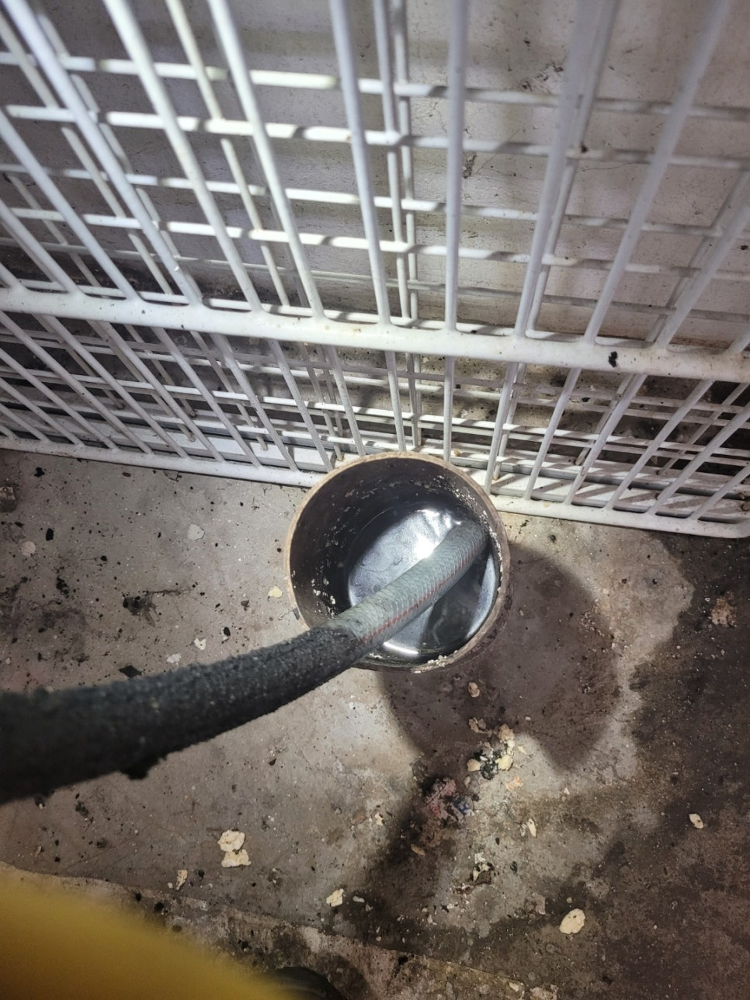
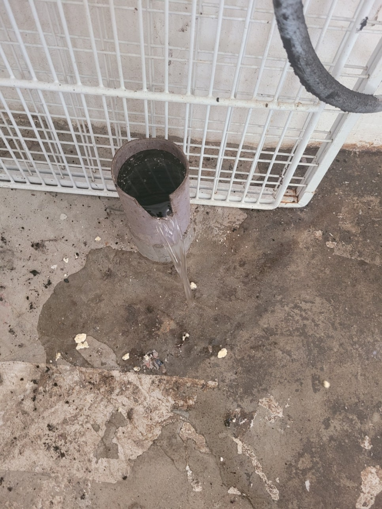
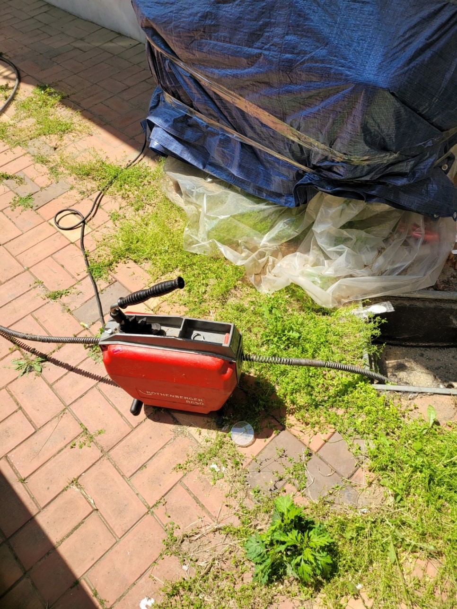
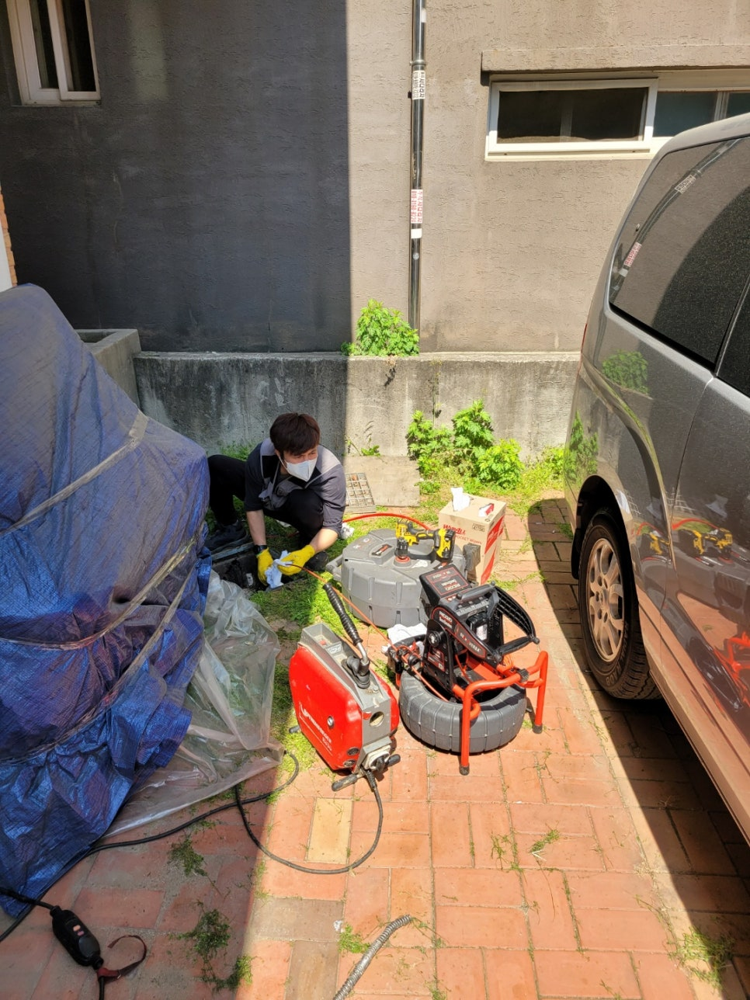
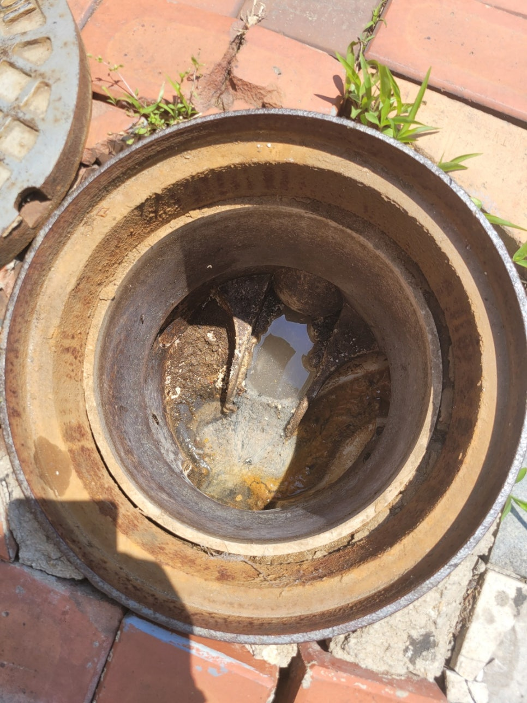
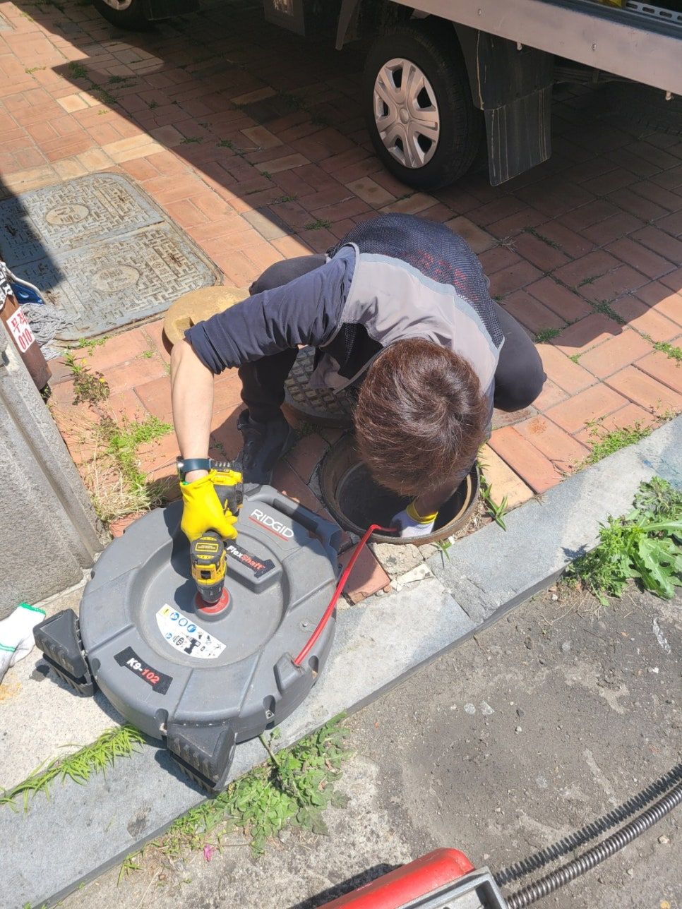
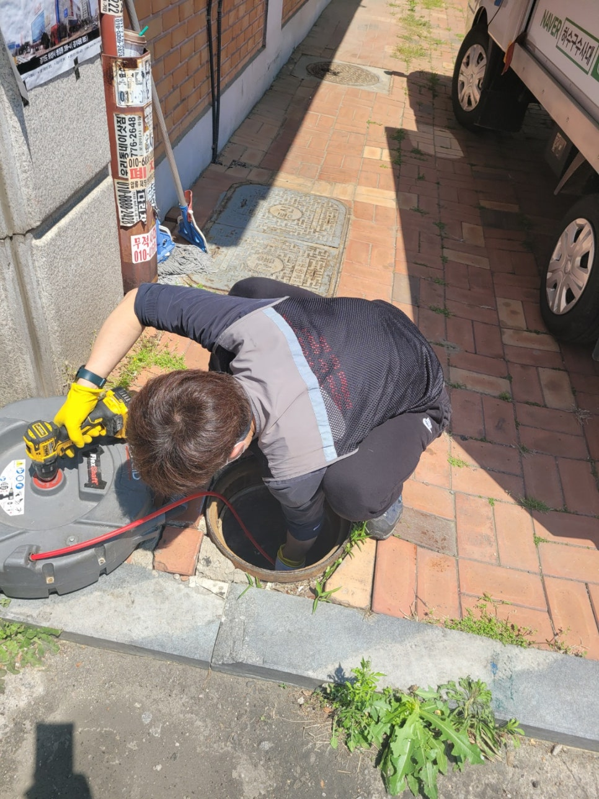

🏠 권선구 상가하수구막힘역류 깨끗하게 해결했어요
수원 하수구막힘 전문 시공 후기

📋 작업 개요
- 위치: 수원
- 서비스 유형: 하수구막힘, 배관막힘, 맨홀막힘, 역류해결, 뚫는업체, 배관청소, 고압세척
- 작업 일시: 2022. 6. 29. 18:27
- 업체명: 하수구수사대 (010-5615-2118)
🔍 문제 상황
권선구 상가하수구막힘역류 깨끗하게 해결했어요
안녕하세요
하수구수사대 입니다.
하수구가 막히면 몇가지 생각이 드는데 셀프로 고치거나
전문업체의 도움을 받아 뚫기도 합니다.
심각하지 않으면 어렵지않게 뚫리기도 하지만 그렇지 않으면
해결이 어려운 경우가 많답니다.
오늘은 1층상가에서 물이 역류하고 있는 고객님의
연락을 받고 출동하였는데요 다행히 1층에서 사용하는
물만 역류하여 물사용을 하지 않고 있었어요.
다른집과 엮여있는 배수관이 막혔다 사용하지도 않은 물이
넘칠텐데 다행이에요.
물이 내려가는것처럼 보였지만 오랫동안 물을 틀어놓으면

🔎 원인 분석
💡 전문가 진단: 수도권전지역 출장가능!최첨단장비보유!1년AS보장!못뚫으면 "0"원!010-2340-2118
점점 차오르는것을 확인 하였습니다.
이런 상황을 종합적으로 생각해보았을때 먼쪽 배관에서 막혔을거라고
판단을 하였답니다.
스프링으로 먼저 뚫어주는 작업을 진행하였는데요
배관에 물이 가득 고여있기때문에 뚫고 내시경카메라로
내부 확인을 하기로 하였답니다.
내부에 기름이 많다면 스프링작업만으로는 완벽하게 해결이
되지 않아 배관청소를 진행해야 한답니다.
최종적으로 나오는 오수맨홀에서도 작업을 진행하였는데
배관 전체적으로 청소를 하기로 하였답니다.
배관구조와 길이에 따라 막힘증상이 달라질수 있는데요
대부분 배관이 길면 구배가 좋지않은 구간이 생겨 기름이 굳어
막히거나 오랜기간 배관청소를 하지않아 막히는경우가
대부분입니다.

🔧 작업 과정
배관청소방법은 몇가지가 있는데요 3년전쯤 출시된
플렉스샤프트라는 장비와 고압세척장비가 있답니다.
플렉스샤프트의 경우 배관내부에 와이어에 연결된 체인이
회전을 하면서 이물질을 부수어 주면서 물을 흘려보내는
방식이고 고압세척의 경우는 엔진으로 고압호스에 물을 분사시켜
호스앞쪽에 있는 노즐이 고압으로 배관을 쏘면서 청소를 하는
장비입니다.
배관의 크기나 구조에 따라 장비선택이 달라진답니다.
배관청소후에는 내시경카메라로 확인하는 것은 필수인데요
가끔 현장을가면 다른업체가 배관청소를 하고 가셨다는데
고객께 내시경확인검수를 하지않는 업체들도 있다고 합니다.
물론 믿고 맡겨주시는것도 중요하지만 책임감 있는 업체라면
반드시 고객과 확인을 하는것이 더욱 좋다고 생각합니다.
특히 설비업종은 고객분들이 신경쓰지않으면
작업자도 신경안쓰는 경우가 종종 몇분씩 있답니다.
저희 하수구수사대는 완벽하게 일을 하고 먼저 자체적으로
점검하고 AS를 최대한 줄이고자 검수를 철저히 하고 있답니다.
간혹 타업체에서 못뚫고 가는 곳을 방문하기도
하는데요 "하수구수사대"가 출동하면 뭐든지 해결해 드리니
언제든지 연락바랍니다^^
"하수구수사대"는 최첨단장비와 고압세척장비,관로탐지기,배관내시경 등등
하수구전문업체로 믿고 맡겨주시면 언제든지 달려가겠습니다


✅ 작업 완료
수도권전지역 출장가능!
최첨단장비보유!
1년AS보장!
못뚫으면 "0"원!
010-2340-2118
경기도 수원시 권선구 곡반정로97번길 9 5층




⚠️ 하수구 배관 막힘 예방 및 관리 가이드
- ✅ 머리카락, 비닐, 물티슈 등 물에 분해되지 않는 이물질은 하수구 유입을 절대 금지해 주세요.
- ✅ 하수구 거름망을 씌우고 모여진 이물질은 주기적으로 쓰레기통에 바로 비워주셔야 합니다.
- ✅ 배관 노후가 심할 경우 이물질이 더 쉽게 걸리므로 주기적인 배관 세척(고압세척 등)을 권장합니다.
- ✅ 작업 후 1년 이내 재발 시 하수구수사대에서 무상 A/S 보증 서비스를 제공합니다.
💡 핵심 정리
- 확실한 장비 작업(내시경 점검 및 샤프트 스케일링)으로 원인을 뿌리 뽑습니다.
- 작업 후 1년 이내에 동일한 부위 재발 시 100% 무상 A/S 서비스를 보장합니다.
- 서울 · 경기 · 인천 전 지역에 24시간 언제든 긴급 출동할 수 있도록 항시 대기 중입니다.
❓ 자주 묻는 질문 (FAQ)
🚨 수원 하수구막힘 문제로 고민이신가요?
정확한 원인 진단과 확실한 시공으로 재발 없는 해결을 약속드립니다.
24시간 긴급 출동 | 서울 · 경기 · 인천 전지역 | 1년 내 재발 시 무상 A/S